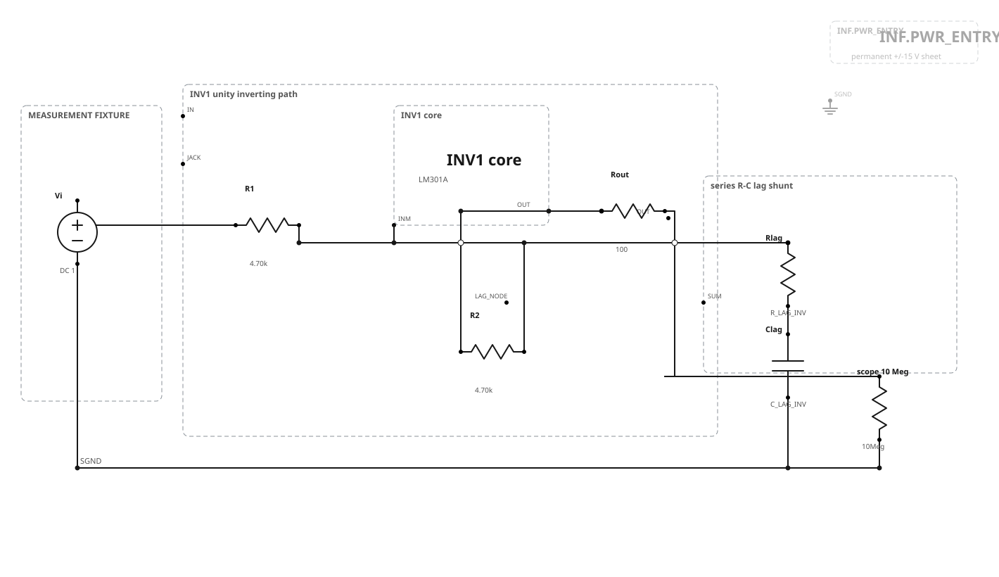
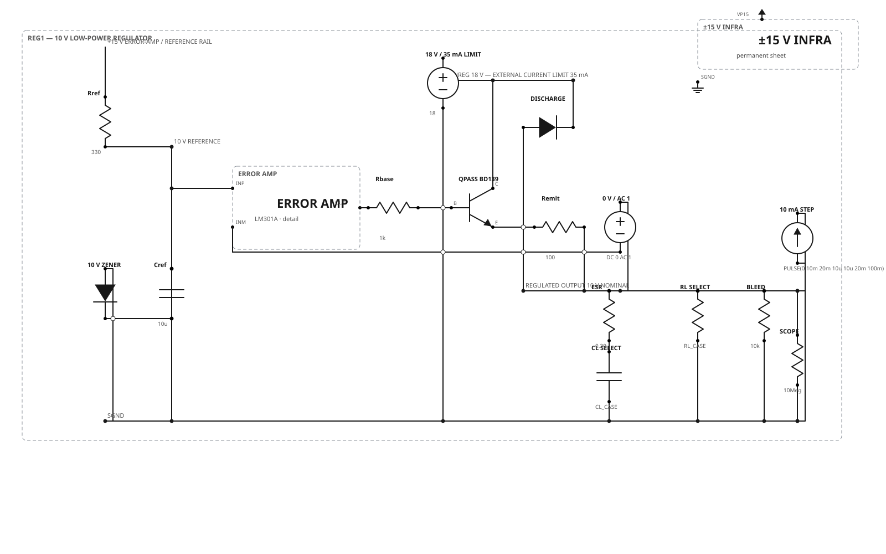
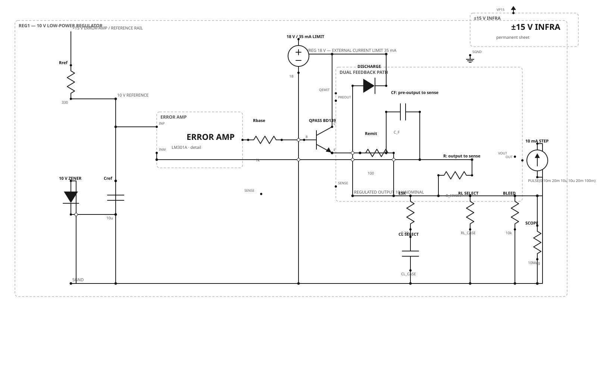
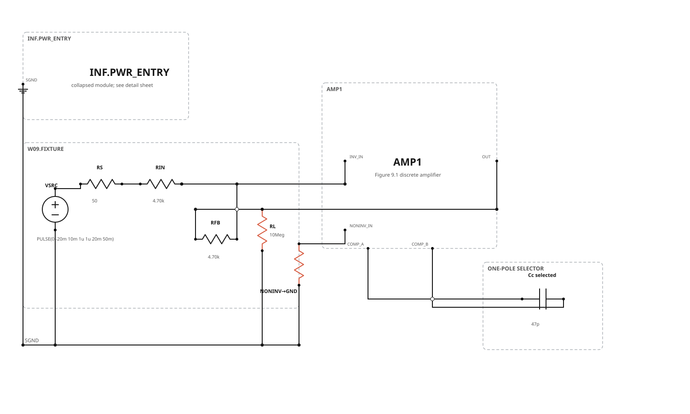
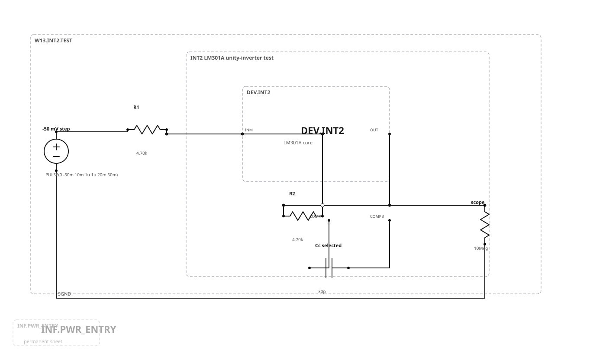
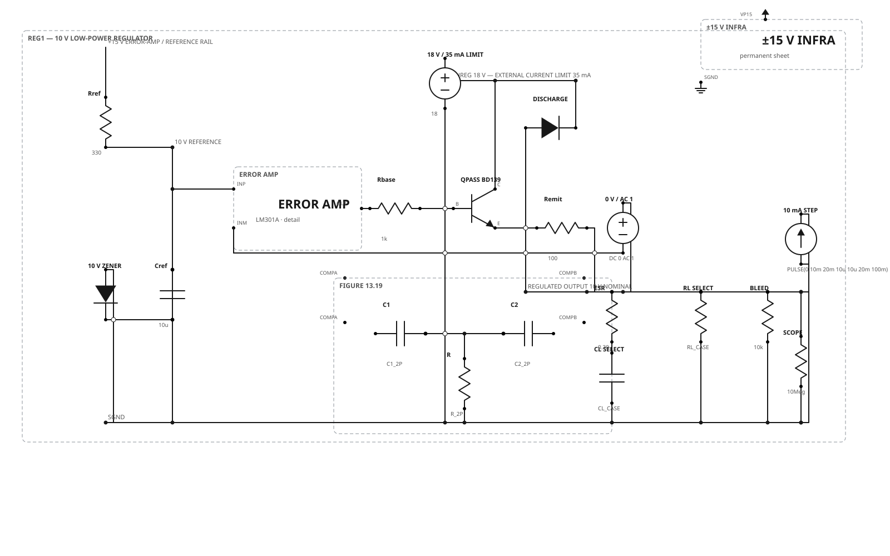
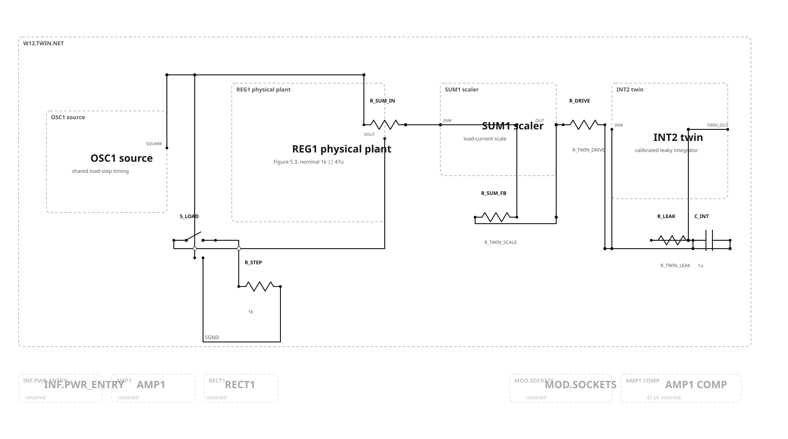

Campaign A · Figure 13.1 input lag
A series resistor-capacitor branch shunts the inverting summing node to ground. SUM1 and INV1 are separate DUTs because their input/feedback resistances and resulting pole locations differ.

| Quantity | Relation | Status |
|---|---|---|
| Lag zero | ωz = 1/(Rlag Clag) | Exact Figure 13.1 topology |
| Lag pole | ωp = 1/[(Rlag + R1 || R2)Clag] | Calculate separately for SUM1 and INV1 |
| Component selection | Choose from measured uncompensated crossover and desired phase/gain margins | MEASUREMENT REQUIRED |
Campaign A · capacitively loaded regulator
REG1 already contains nonzero output isolation, selectable load capacitance, ESR, and load resistance, so the capacitive-load comparison is applicable. Baseline and compensated feedback topologies remain separate.


| Element | Mapping | Status |
|---|---|---|
| Isolation resistance | Existing REG1 R_EMIT = 100 Ω | Installed |
| Fast feedback | C_F: QEMIT → SENSE | DERIVE FROM MEASURED LOOP |
| Load-output feedback | R_FPATH: VOUT → SENSE | DERIVE FROM MEASURED LOOP |
| Claim boundary | Adaptation of Figure 13.8 to the accepted regulator topology | Not represented as a verbatim inverter |
Campaign B · one-pole compensation
The discrete AMP1 and LM301A INT2 experiments are separate because their open-loop dynamics, feedback factors, compensation terminals, and useful capacitor ranges are not interchangeable.


| DUT | Starting selection | Declared sweep | Retention rule |
|---|---|---|---|
| Discrete AMP1 | 47 pF | 20, 47, 100 pF | Measured stability, settling, and slew criteria |
| LM301A INT2 | 30 pF | 12, 30, 220 pF | Measured stability, settling, and slew criteria |
Campaign B · Figure 13.19 regulator two-pole network
The standard 30 pF capacitor is disconnected. C1 and C2 are series elements between the REG1 error-amplifier compensation terminals, and R shunts their midpoint to ground.

| Relation / constraint | Week 13 treatment |
|---|---|
τ = R(C1 + C2) | Use with the measured uncompensated amplifier/plant model |
K′ = K/(R C1 C2) | Select against the named REG1 feedback attenuation and target crossover |
| Figure 13.21: 30 pF–15 kΩ–30 pF | Reference only. It belongs to Roberge's 2.2 kΩ unity-inverter demonstration and is not copied into REG1. |
| Robustness | Must pass load, capacitance, ESR, device, temperature, and overload-recovery cases—not merely one nominal simulation |
Concluding configured circuit
This is the normal-operation end state, not another measurement campaign. It retains the completed real-regulator and calibrated analog-twin computation and fixes only the already accepted one-pole defaults.

Gate and review decision
Approval accepts seven separate experiment graphs, the concluding normal-operation graph, the named DUTs, topology mappings, symbolic measurement-derived values, and publication presentation. It does not approve quantitative stability performance for the still-symbolic experimental networks.
| Gate | Status | Meaning |
|---|---|---|
| Graph/schema | PASS | Strict W12→W13 physical addition with seven experiments plus one final build |
| SVG/SPICE connectivity | PASS | All eight published pairs agree pin-for-pin/net-for-net |
| Visual inspection | PASS | All final sheets inspected after focused active-circuit projection |
| Electrical performance | BLOCKED | Requires measured return ratios, realistic models, synthesis, tolerance sweeps, and transient/overload verification |
Canonical authority: Week 13 graph. Protocol: case manifest. Decision: production record. Week 12 approval: acceptance record. Deferred projects remain: patch-cord drawings, permanent-infrastructure sheets, modern alternatives, physical construction documentation, and the separate low-voltage redesign.